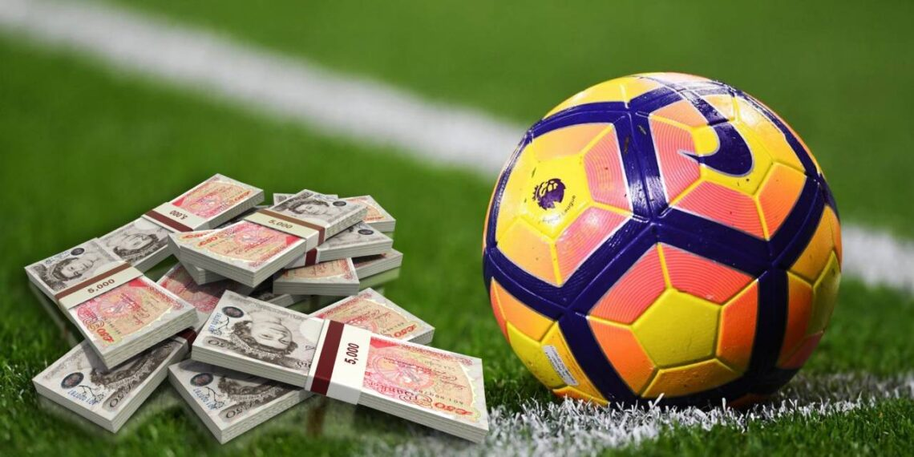

Napsal: Vojtěch Krupa
Datum: 5.5.2026
V dnešní době se často řeší, kolik vydělávají profesionální sportovci. Fotbalisté, basketbalisté nebo tenisté mají platy v milionech a spousta lidí si myslí, že je to až moc. Já si ale myslím, že to není úplně tak jednoduché. Na jednu stranu to opravdu působí nespravedlivě. Sportovec může vydělat za týden víc než jiný člověk za celý život, třeba učitel nebo zdravotní sestra. Když se na to člověk podívá jen takhle, je jasné, proč to lidem vadí. Na druhou stranu je ale sport obrovský byznys. Kluby vydělávají peníze na vstupenkách, reklamách a hlavně televizních právech. A sportovci jsou hlavní důvod, proč na to lidi vůbec koukají. Bez nich by ty peníze prostě nebyly. Navíc je důležité si uvědomit, že do vrcholového sportu se dostane jen malé procento lidí. Ti nejlepší trénují celý život, mají obrovskou disciplínu a často obětují normální život. A kariéra sportovce taky netrvá dlouho — zranění ji může klidně rychle ukončit. Podle mě teda sportovci nejsou „placeni moc“, spíš je problém v tom, jak jsou nastavené platy v jiných profesích. Sport je prostě svět sám pro sebe.
